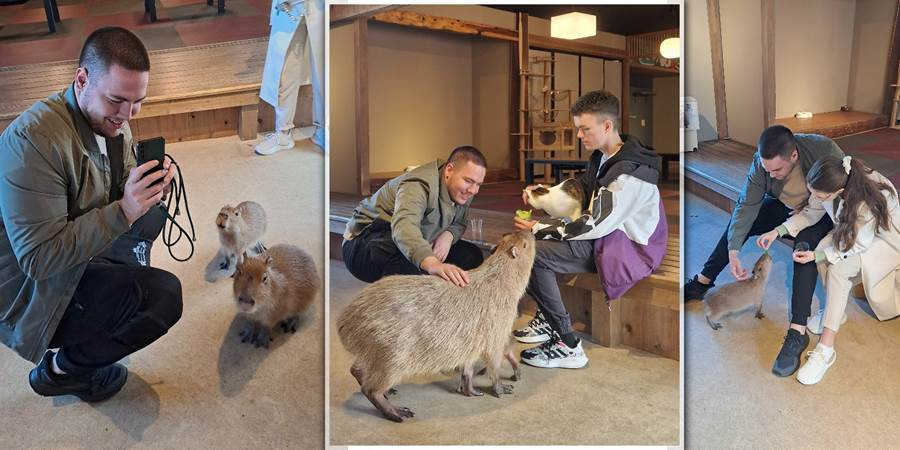
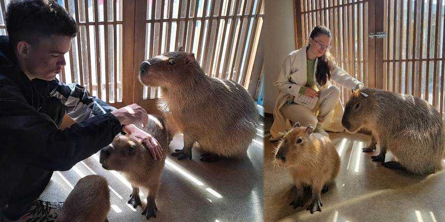

Dan sedmi: kapibare
Ugledala sam iz kola reklamu za nešto kao zoo. Na slici je bila kapibara.
Nesmotreno smo propustili da vidimo da Kapibara kafe u Tokiju radi samo četiri dana u nedelji (od petka do ponedeljka). I to baš kad su ta četiri dana prošla, u utorak, mi rešili da posetimo kapibare. A bile su nam u komšiluku.
Guglala sam kapibare u Niku i našli smo ih. Još bolje od propuštenog. Ima ih tri, dok je u kafiću bila jedna ili dve. Ima i pingvina i majmuna.
A najbolje je što nije kafić u kome se sedi i čekaš da ti životinje priđu, nego možeš i ti da priđeš njima i što smo ih imali samo za sebe. Čak je i čuvar izašao. Deca su bila presrećna.
Kapibare su sad neki TikTok hit. Hranili smo ih i mazili. Dlaka im je kao slama. Vole društvo.
 
Ne propustite sledeću avanturu!
Kad Sandra krene u novi kraj sveta, vaš inbox prvi sazna. Prijavite se i stižu vam sve nove priče mejlom.